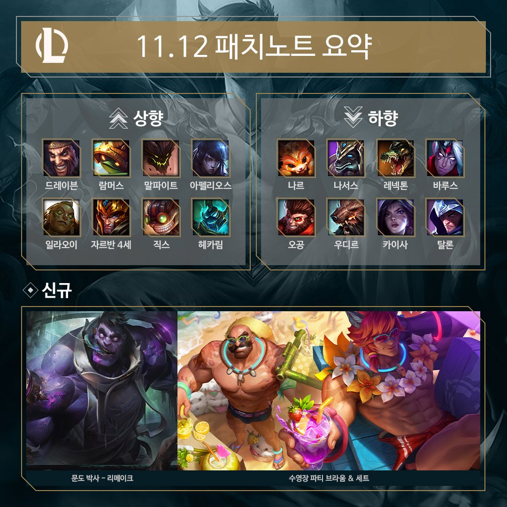
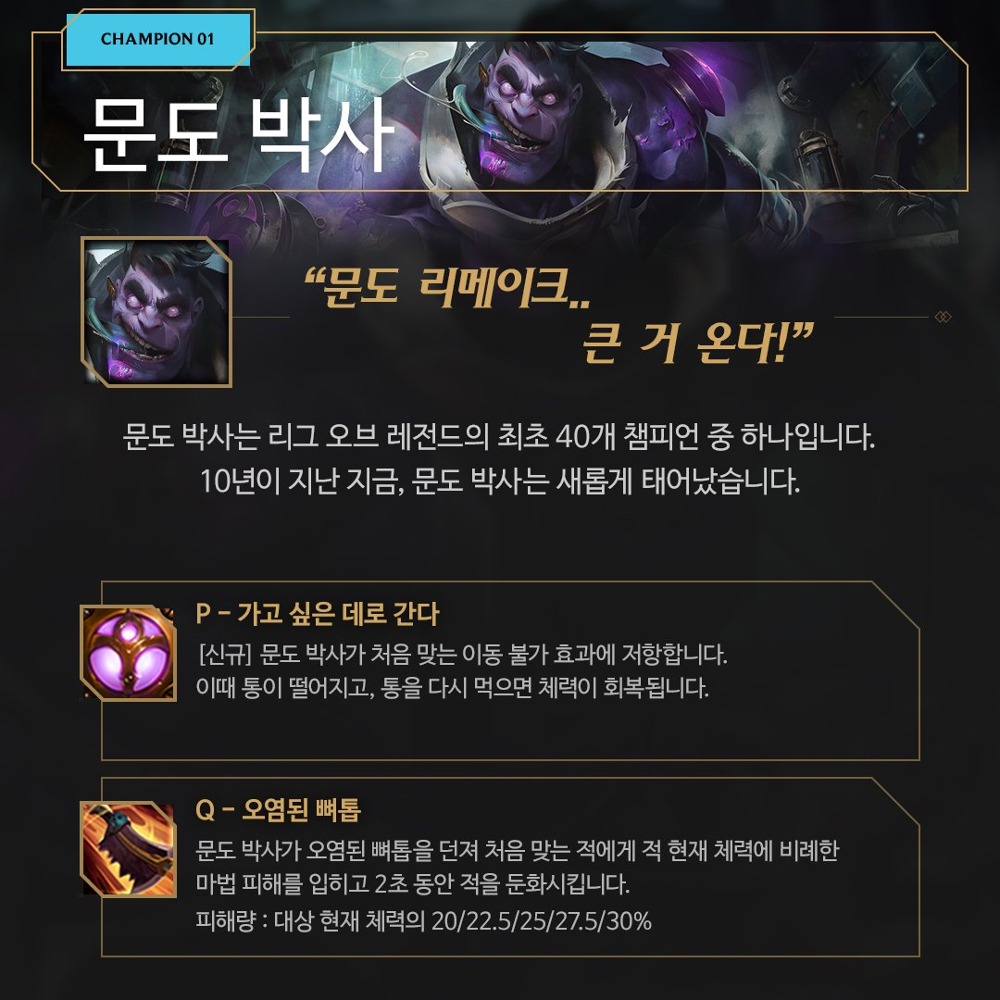
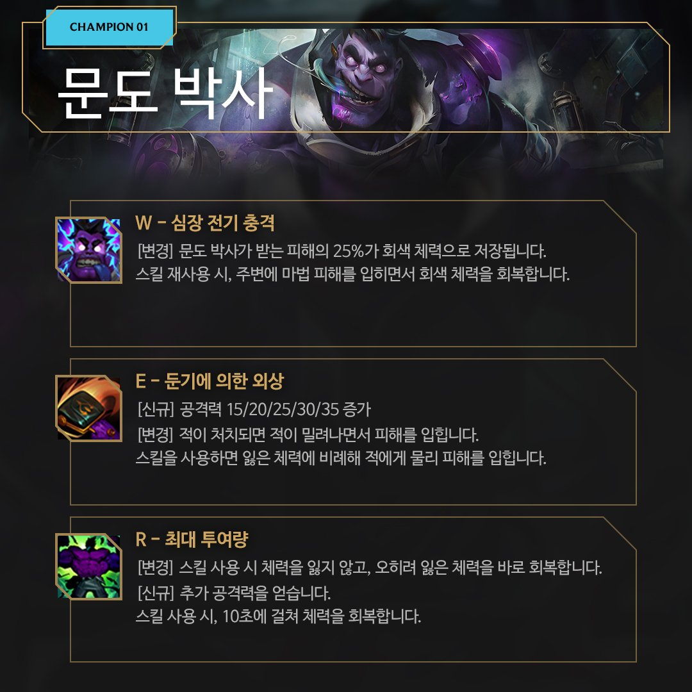
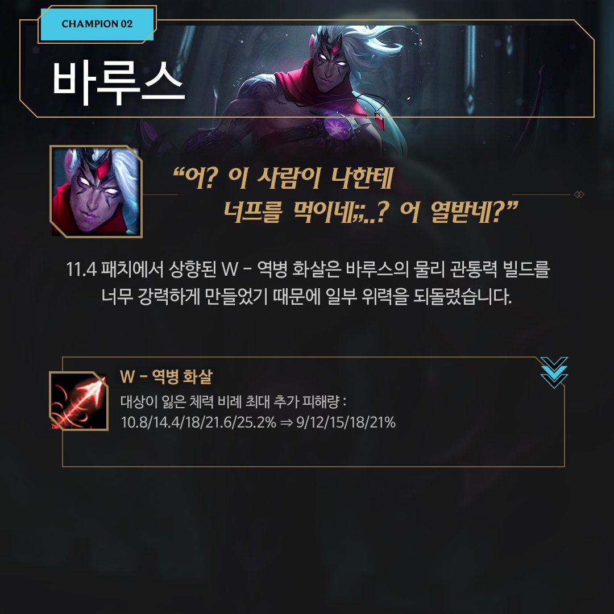
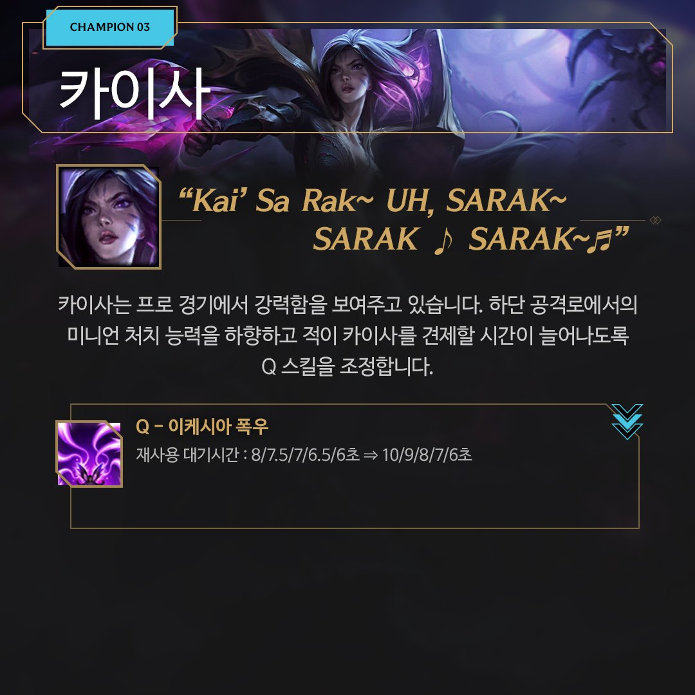
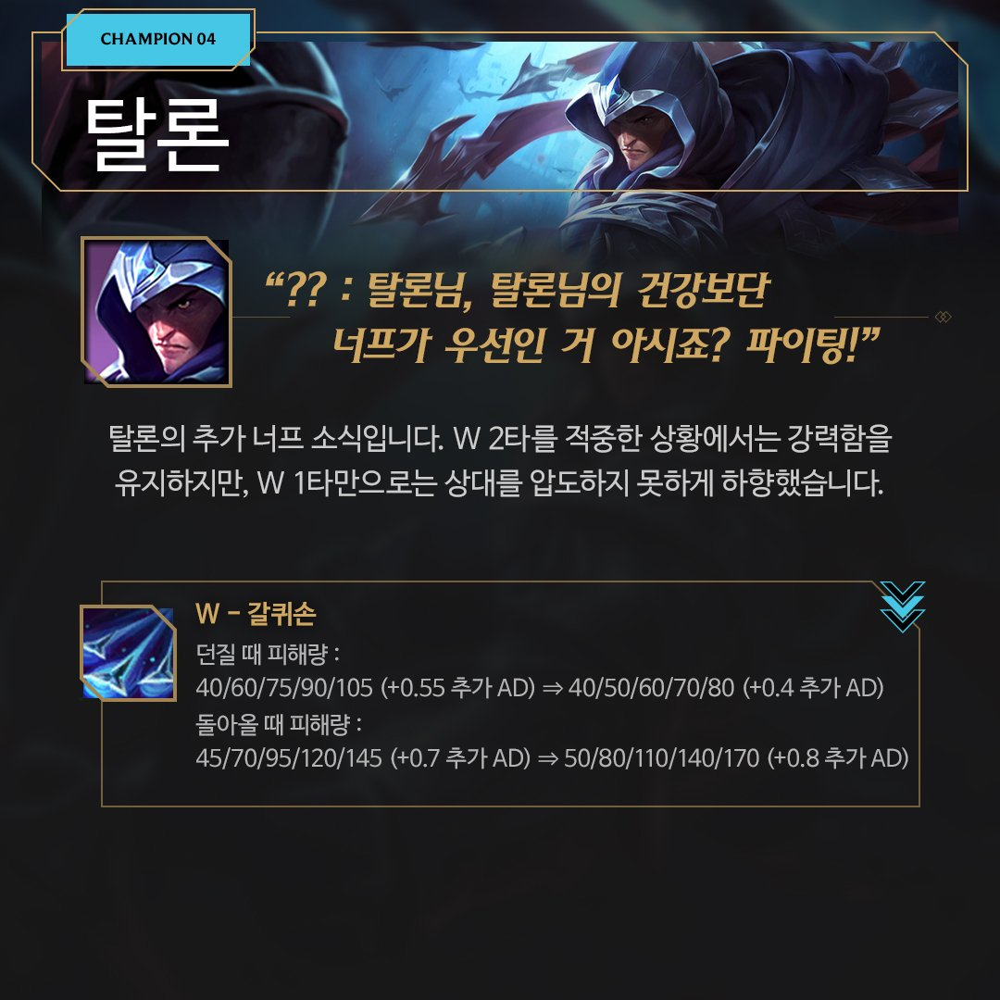
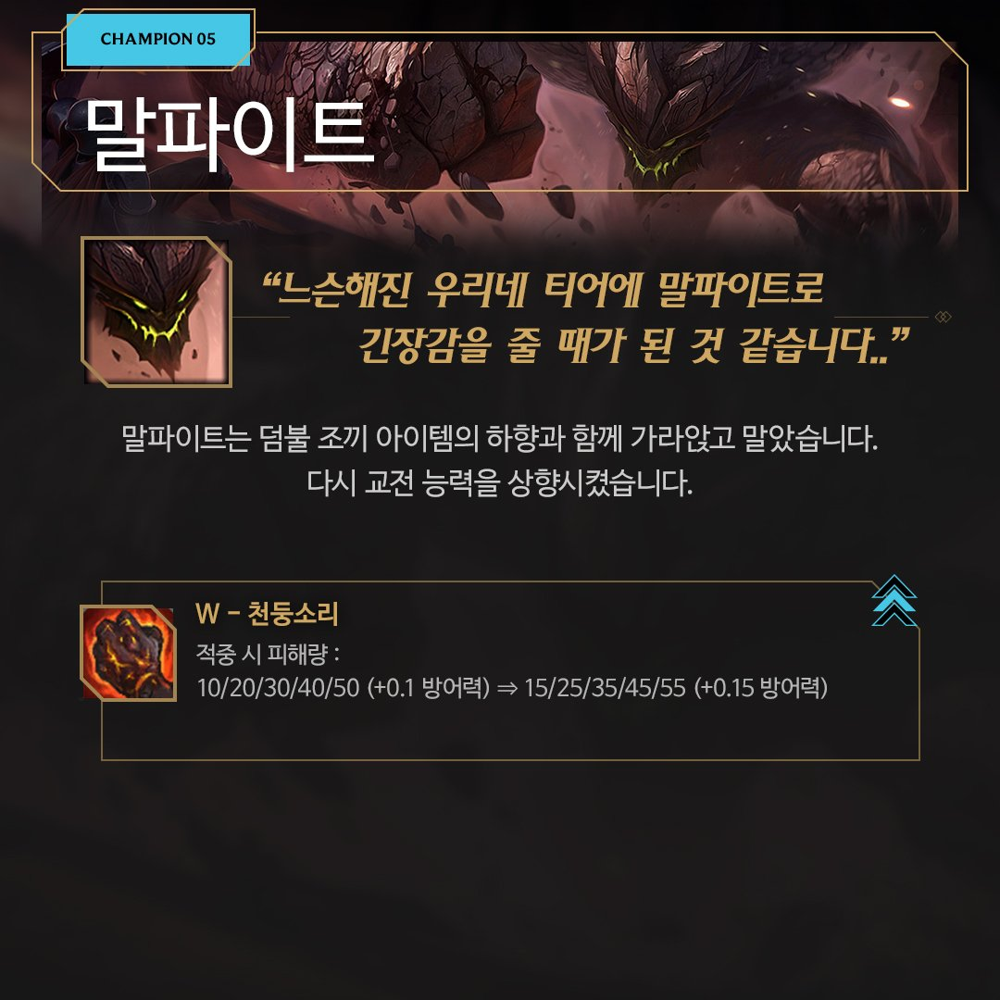
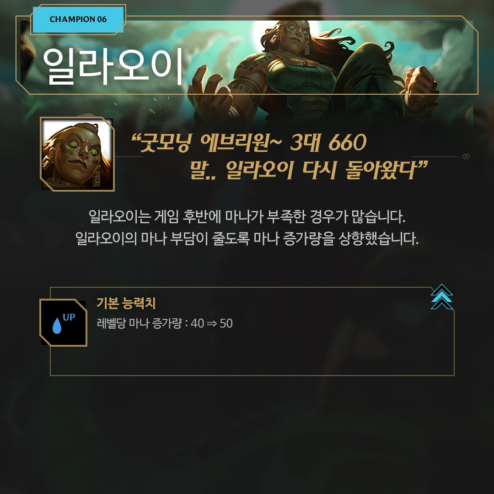
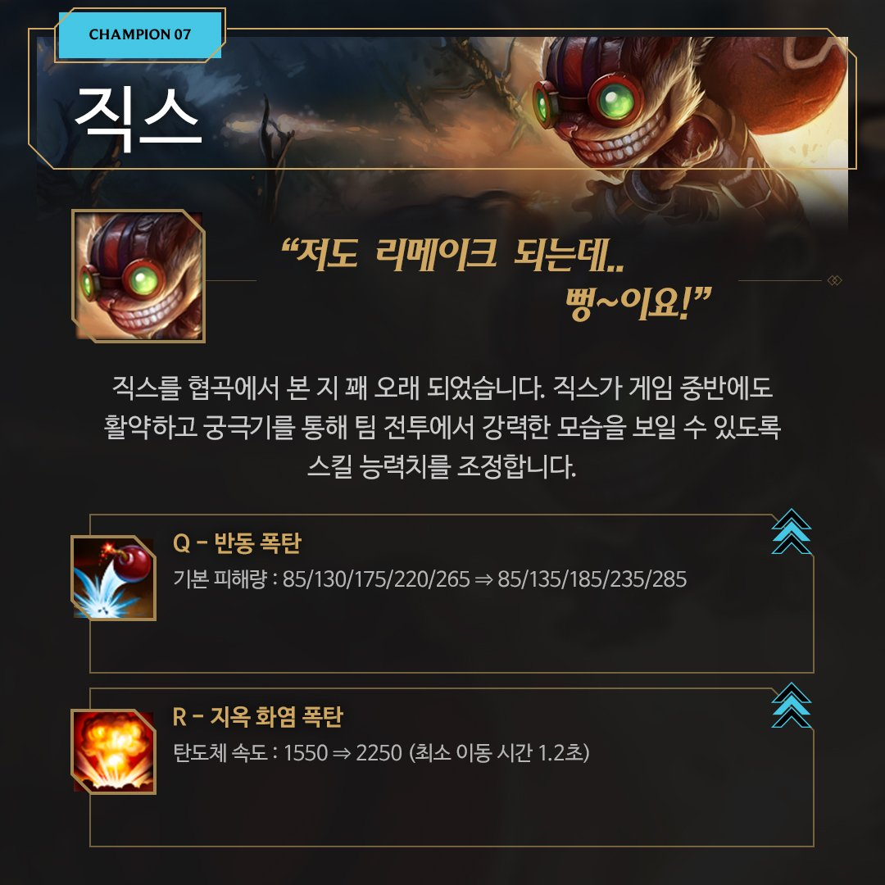
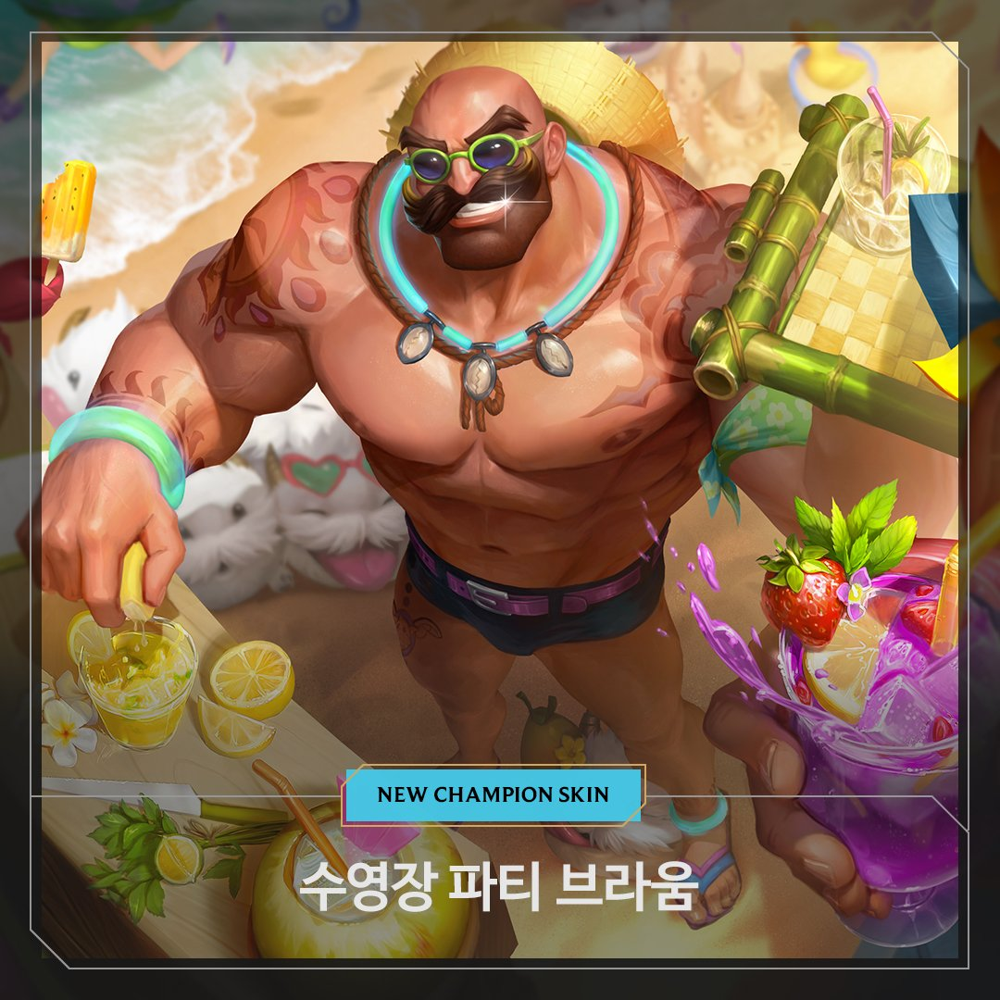

패치노트
- 11.12
- 11.13
11.12 LoL 패치노트 하이라이트
챔피언 너프 / 버프
- 1. 문도
- 2. 바루스
- 3. 카이사
- 4. 탈론
- 5. 말파이트
- 6. 일라오이
- 7. 직스
11.12 패치는 챔피언 밸런스 조정 중심의 소규모 패치입니다.
대신 11.13 패치에는 대규모 시스템 조정이 예정되어 있습니다.
이번 패치에서는 아펠리오스의 능력치와 잘 사용되지 않는 무기 조합을 상향했고 프로 경기에서 강력한 챔피언
(레넥톤, 카이사 등)을 하향했습니다. 또한, 마침내 자운 최고의 보라색 의사가 새로운 모습으로 돌아왔습니다.
새로운 문도 박사는 활기로 가득하지만 문도 박사의 환자는... 그렇지 않은 것 같네요.
자세한 내용은 <https://riot.com/LoL1112>를 참고해주세요












<https://post.naver.com/viewer/postView.naver?volumeNo=31694420&memberNo=21497442&navigationType=push>